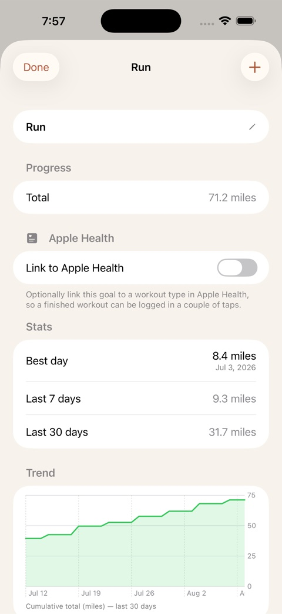

Everything you're working toward, in one place.
Daily habits, running totals, targets by a date, and one-time resolutions — with streaks and insights that never leave your device.

Four ways to track
However you actually think about progress, one of these fits it.
The classic streak. Flexible frequencies, specific weekdays, rest days that don't break it, and quit-habit tracking that counts the days you stay clean.
Count something up — miles, pages, glasses of water, dollars saved. Log it in a couple of taps and watch it add up.
"Read 12 books by December." Onward does the pace math and tells you, honestly, whether you're ahead, on track, or behind.
A one-time goal with no schedule — "update my will," "plan the trip." Track it as a checkbox, a percentage, or a checklist, with an optional due date.
See how far you've come
Your history becomes feedback: streaks, completion rates, an activity heatmap, trend charts, milestones, and a weekly review.
Today

Insights

Running totals

Pace

Streaks
Built to fit real life
Focus timer
Timed habits and a built-in focus timer for deep work sessions.
Reminders
As many as you need per habit, grouped by time of day.
Notes and mood
Add a note and a mood tag to any entry.
Full calendar
A complete history you can edit and backfill.
Light and dark mode
Looks right, day or night.
Apple Watch
Log habits and check streaks right from your wrist.
Free to start. Pro when you're ready.
A one-time unlock, not a subscription. If you were already using Onward, you keep everything for free.
- All four goal types
- iCloud sync across your devices
- Apple Watch app
- Up to 5 active goals
One-time unlock · no subscription
- Unlimited active goals
- Full Insights dashboard & Weekly Review
- Timed habits & focus timer
- Apple Health import
- CSV import/export
- Multiple reminders per habit
- Resolution progress tracking
Already using Onward? You keep everything for free, permanently — thanks for being an early user.
Privacy
Local-first, by design.
Your data lives on your device — no account, no sign-in, no analytics, no ads. The App Store privacy label says it plainly: Data Not Collected.
- iCloud sync uses your own private iCloud account — I never see it.
- Apple Health import happens on demand and never leaves your device.
- No third-party SDKs, no analytics, no advertising.

Getting started
Create your first goal
Tap + and choose Daily Habit, Running Total, or Target by Date.
Set the details
Frequency, weekdays, reminders, and rest days if you want them.
Log from Today
Check it off, add a note or mood, and keep your streak alive.
Check Insights weekly
See your heatmap, streaks, and milestones, and review your week.
Connect Health and iCloud
Optional: import workouts from Apple Health and sync across devices in Settings.
Frequently asked
Is Onward free?
The free tier is fully capable: all four goal types, iCloud sync, Apple Watch, and up to 5 active goals, no account required. Onward Pro is an optional one-time unlock, not a subscription, that removes the goal limit and adds the full Insights dashboard, Weekly Review, timed habits, Apple Health import, CSV import/export, multiple reminders, and Resolution progress tracking.
I was already using Onward — do I have to pay?
No. If you were using Onward before Onward Pro launched, you keep everything for free, permanently, as a thank-you for being an early user.
Do I need an account?
No. There's no sign-in of any kind. Onward works the moment you open it.
Does Onward collect my data?
No. Onward has no servers, no analytics, and no third-party SDKs. Its App Store privacy label reads "Data Not Collected."
Can I sync across my devices?
Yes, via your own private iCloud account. Onward never has access to that data.
Does it connect to Apple Health?
Optionally. You can import workout data into a goal on demand. Onward never runs in the background or monitors Health continuously.
Is there an Apple Watch app?
Yes. Log habits and check your streaks right from your wrist.
Running Total vs. Target by Date — what's the difference?
Running Total just adds up what you log. Target by Date does that plus a deadline, and calculates whether you're ahead, on pace, or behind.
What's a Resolution?
A one-time goal with no quantity or recurring schedule — things like "update my will" or "plan the trip." Mark it done with a checkbox, or track partial progress with a percentage or a checklist of sub-tasks. An optional due date is a plain deadline; there's no pace math since there's no quantity to pace against.
What happens if I miss a day?
Depends on the habit. Rest days don't break a streak, flexible frequencies give you room, and quit-habits simply restart the clean-day count.